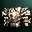
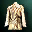

Lineage IIInterludeS
Заточка S-грейда в Lineage 2 Interlude
17 предметов · шансы +4…+16
Все предметы S-грейда, доступные в симуляторе заточки. Шанс зависит от типа предмета, а не от грейда.

Imperial Crusader Breastplate · Броня
Major Arcana Robe · Броня